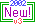

Global
Commands
Global
Commands
|
 Main
Command Menu
Main
Command Menu
|
 Computer
Commands
Computer
Commands
|

 Navigation
Navigation
<D>
Re-display Sector
This will re-display
the information about the sector where you are currently located.
Information includes sector number and nebulae name, marker beacons, port
name and class, mines, fighters, planets and any other ships. Next
to the class you will see three letters signifying how the port trades
in the commodities. For example a SSB would indicate that the port
sells Fuel Ore, sells Organics and buys Equipment. The adjacent sectors
will also be shown. With a color display, the sectors you have not
yet visited will show up in red.
<P>
Port and Trade
This will allow you
to dock at the port in your current sector. This is the only way
to trade your commodities. You will have some choices for what action
you would like to take at the port. Most of the choices are self-explanatory.
If you are playing the game as an evil trader, the choices you see will
be different than they would be if you were playing the game as a lawful
Player. When you dock at the port, you will be able to see the docking
log. This will show you the name of the last ship to do business
there. If there is a planet in the sector with this port, you will
be able to negotiate a Planetary Trade Agreement. This is a trade
contract that will allow you to trade off all your excess commodities to
the port without wasting your turns hauling one shipload at a time.
If you want to build a new Starport and the universe is full or if you
decide that your adversaries have too big an advantage and you need to
get rid of that port they have been using, you can attack and destroy a
starport. This is never an easy task. The starports are very
heavily armed and will retaliate, so you will need to have plenty of military
forces with you if you decide to proceed with this selection.

<M>
Move to a Sector
The sectors adjacent
to your current location will be listed as warp lanes in the sector
display. You can move to one of them, or you can choose any other
sector in the universe. If you designate a sector that doesn't have
a direct warp lane, your ship's computer will plot your course, show the
path and the number of hops (and turns) the trip will use, and ask you
if you want to engage your AutoPilot. You will be able to use the
Autopilot in three different modes. The default is Alert mode.
This will suspend your travel in any sector where there is a planet, port,
navigational hazard or other trader. Once alerted to one of these
items, you will be given several options. It is up to you to make
the decision that will best serve you or your corporation. The second
mode is Express. This speeds you to your destination provided there
are no enemy forces in your path. The third mode is Single Step.
This was developed by an enterprising group of pioneers. Their group
was getting smaller due to bold exploration of sectors filled with mines,
so the survivors manufactured an Autopilot that would stop in each sector.
This allowed them to scan the next sector for hazards before proceeding
into it. Select this option if you feel the need for caution.
<L>
Land on a Planet
This option will enable
you to colonize your planets, build a Citadel and do business there, pick
up the fighters built by your colonists or pick up the production of Fuel
Ore, Organics and/or Equipment. You will see a list of all the planets.
Simply enter the number for the one you want to visit. If you have
purchased a Planet Scanner at the Hardware Emporium, it will automatically
provide you with additional information about the planet. The Planet
Scanner will also allow you to abort the landing procedure if, after looking
at the defenses, you feel you may not be able to land successfully.
The display, once you have landed, shows the planet number, location, name,
class and a chart detailing the commodities, production requirements and
current inventories. You will also see the citadel information and
any planetary defenses.
<S>
Long Range Scan
If you have purchased
a scanner from the Hardware Emporium, you can use it to view adjacent sectors.
All things in the Trade Wars universe have a density value and you can
use your Density Scanner to display the relative density of the neighboring
sectors and determine if there are any Navagational Hazards. You
will also be warned of any non-standard, undefinable mass. You can
then use that information to determine what's next door. If you have
a Holographic Scanner, you will be able to see ports, planets, hazards
and other players all for just the cost of one turn.
<R>
Release Beacon
Choose this when you
want to launch one of the Marker Beacons you purchased at the Hardware
Emporium. You will need to decide what message your beacon will send
when you launch it. (Limit 41 characters)
<W>
Tow SpaceCraft
This option lets you
toggle your tractor beam on and off. The computer will ask you which
trader in your current sector you wish to tow. You can tow an unmanned
ship only if you own the ship and know the ship's password. The computer
will then calculate (using the size difference between the two ships) the
number of turns you will use for each sector you tow this trader and his/her
ship. You can then use the Move option to go to an adjacent sector
or you can engage your AutoPilot to move you and your "passenger".
Type 1 TransWarp drives were not made to be used in conjunction with tractor
beams, so if you use your Type 1 TransWarp, the tractor beam will automatically
shut down. Type 2 TransWarp drives can be used with a ship in tow.
The person you are towing will not enter a sector until you have safely
entered. The tractor beam will act as a protective shield and will
safeguard the towee from any damage from mines, offensive fighters or Quasar
cannons. If your ship is destroyed, the tractor beam will also be
destroyed and the person you are towing will be left stranded. To
disengage the beam at any point, use this option again.
<N>
Move to NavPoint 
Navigation Points
are sectors of particular relevance to you or your corporation. They
are assigned from the main menu with the "<Y>
Set NavPoints" option. All Nav units are pre-programmed with
info on Sector 1 (Terra), and (if the sysop wishes) StarDock Sector, and
there are four other definable points. Navigation info is available
on any sector in FedSpace, or any sector containing one or more of your
fighters. This info includes any planet or port details for that
sector.

|
Global
Commands
|
 Exit
Help
Exit
Help
|
Computer
Commands
|